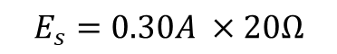

Voltage in Parallel
- Voltage across every branch equals the source voltage
- All parallel components share the same potential difference

Current in Parallel
- Current divides between branches
- Branch current depends on resistance
- Lower resistance branch carries more current
Kirchhoff's Current Law
- Total current entering a junction equals total current leaving
- Total current = sum of branch currents
- Think of a fork in a river: water coming out equals water going in, even if one channel is narrower

The same source voltage (24 V) applies to every branch. Use Ohm's Law to find each branch current.
R₁ = 125 Ω
R₂ = 200 Ω
R₃ = 50 Ω
E_S = 24V · R₁=125Ω · R₂=200Ω · R₃=50Ω
Total Current I_S
KCL Check
1
Identify & Replace Series Resistors
Original Circuit
→
R₂ and R₃ are in series — combine them:
→
After Step 1

2
Identify & Replace Parallel Resistors
After Step 1
→
Req(R2,R3) = 100Ω and R₄ = 150Ω are in parallel:
→
After Step 2

3
Continue Simplifying
After Step 2
→
R₁ and Req(R2,R3,R4) are in series — combine:
→
Fully Simplified

4
Calculate Total Current I_S
Total Source Current
I_S = 0.30 A
5
Work Backwards — Voltage Drops
R₁ = 20 Ω

Req = 60 Ω
KVL Check
5
Parallel Branch Currents
Req(R2,R3) = 100 Ω
R₄ = 150 Ω
KCL Check
5
Voltage Across R₂ and R₃
R₂ = 40 Ω
R₃ = 60 Ω
KVL Check